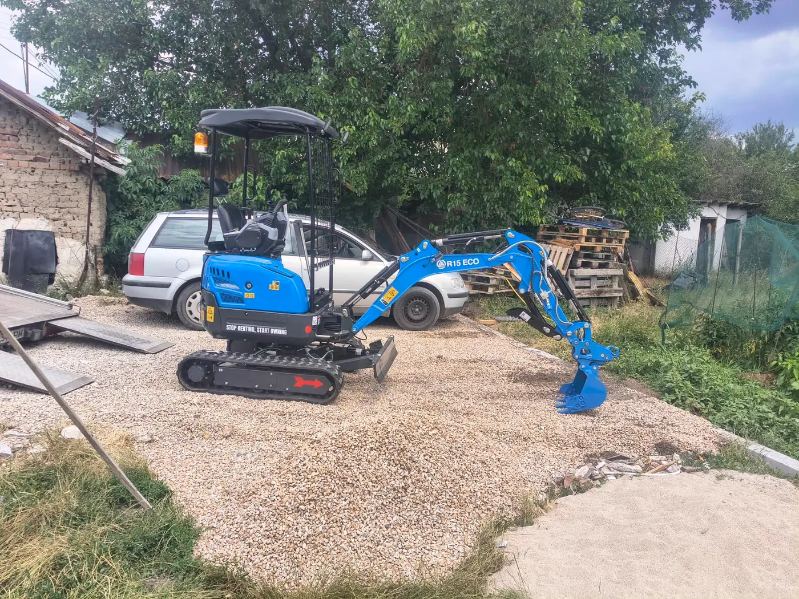

Влиза там, където другите спират
Транспортна ширина около 1 м. Минава през стандартни порти, тесни алеи и дворове между къщи — без да се налага да се демонтира ограда.

МинибагерКостинброд
Rippa R15 Eco 1.5 т с гумени вериги, три кофи, свредел, чук и хидравличен палец. Собствена доставка на техниката до обекта в София-област.
В Божурище, Костинброд и селата около София обектите често са тесни, с готови настилки и озеленяване. Тук 1.5-тонният Rippa печели срещу 3-тонните машини.
Транспортна ширина около 1 м. Минава през стандартни порти, тесни алеи и дворове между къщи — без да се налага да се демонтира ограда.
Не драска асфалт и паваж като стоманени вериги. Подходящ за готови дворове, вили и новопостроени къщи, където теренът вече е оформен.
С палеца вадим корени и дънери, местим камъни и товарим отпадъци в контейнер на клиента. Една машина — изкоп + захват.
Техниката пристига с наш транспортер. Не чакате външна пътна помощ. До 15 км при цял ден — доставката е включена в цената.
Кофи 20, 40 и 80 см, свредел 150 мм, хидравличен чук и палец. Една машина покрива изкоп, дупки, разбиване и захват.
База в Костинброд. За обекти в дефилето и западните квартали на София не плащате „градски“ транспорт от центъра.
Rippa R15 Eco с двигател Kubota D722 — нисък разход, стабилна работа през цялата смяна. Това държи цената на услугата предвидима.
Фокусът е върху точни изкопи за частни дворове и малки обекти. Не предлагаме извозване на земна маса и отпадъци — само доставка на минибагера и работата на машината.
Тесни канали за оптика, капково напояване, заземяване; стандартни канали за тръби и малки шахти до ~1.8 м дълбочина.
Най-търсената услуга в региона: ивица за ограда с кофа 40 см + дупки за колове със свредел 150 мм.
Канали за дренаж, отводняване, водопроводи и канализация в дворове — без да се разкопава целият парцел.
Планировъчна кофа за оформяне на двор, разпределяне на хумус, тераси и обратни насипи след изкоп.
Бързо пробиване за оградни колове, жив плет, перголи и засаждане — по дупка или на час.
Стари бетонови пътеки, плочи, замазки и тънки основи. Не е услуга за тежко събаряне на сгради.
Палецът превръща кофата в щипка: изкореняване, местене на камъни, товарене в контейнер — без ръчна работа.
Създаден за частни имоти и труднодостъпни места. Дълбочина на изкоп до около 1.8 м. Готов за прикачен инвентар: кофи, свредел, чук и хидравличен палец.
Вашият Rippa R15 Eco: гумени вериги, хидравличен палец, собствен транспорт с ремарке, работа в тесни дворове.


Кофи, свредел и чук са нови и готови за смяна на обекта.


Техниката пътува с наш ремарке/камион — не чакате външна пътна помощ за доставка. На обекта работите с човек, който познава машината и региона.
Извозването на пръст и отпадъци не е част от услугата. При нужда товарим в ваш контейнер или камион с кофата и палеца.
Финалната оферта е след оглед — теренът в Годеч и Драгоман често е по-каменист от този около Костинброд.
| Услуга | Ориентир |
|---|---|
| Изкоп / планиране (машиносмяна 8 ч) | 200–230 € |
| С хидравличен чук (8 ч) | 250–270 € |
| Свредел — на дупка / на час | от 3 € / 40 € |
| Минимум (половин ден) | 100–120 € |
| Доставка на багера до 15 км при цял ден | включена |
| Доставка 15–30 км | 40–60 € |
Важно: не включваме извозване на пръст и отпадъци. Доставяме само минибагера. Пълна таблица и условия — на страница Цени.
Изкоп и планиране: 200–230€ за 8 часа. С чук: 250–270€. Минимум половин ден: 100–120€. Доставката на машината до 15 км е включена при цял ден.
Не. Ние транспортираме само минибагера и извършваме работата. Извозването на материали е за сметка на клиента. Ако имате камион или контейнер на обекта — можем да товарим в него.
Машината е с гумени вериги и ниско тегло. При нормални условия рискът е много по-малък, отколкото при тежък багер. При много мека почва след дъжд обсъждаме подхода на огледа.
Плитки и малки ями/шахти — да. Големи дълбоки изкопи над ~1.8 м или голям обем — по-подходяща е по-тежка техника. Казваме го честно още на огледа.
Не излизаме за „един час“. Минимумът е половин машиносмяна (около 3–4 работни часа), за да покрием подготовка, разтоварване и работа.
Кажете населено място, какво копаете и дали имате тесен достъп. Даваме ориентир за цена и свободен ден.